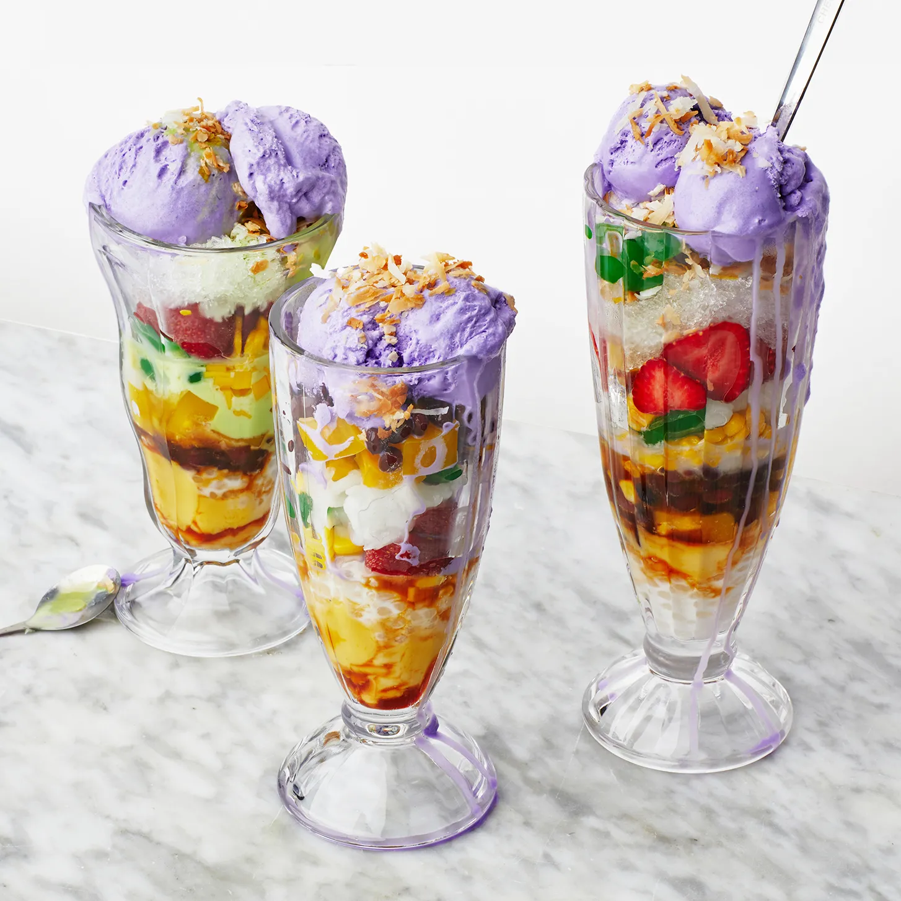

Binangkal is a type of doughnut from the islands of Visayas and Mindanao in the Philippines. It is made from deep-fried dense dough balls coated with sesame seeds.[1][2][3] It is usually eaten with hot chocolate or coffee.[4] The name is derived from bangkal, the local Cebuano common name for the Leichhardt tree (Nauclea orientalis) which bears spherical flowers and fruits.[5]

Adobo or adobar (Spanish: marinade, sauce, or seasoning) is the immersion of food in a stock (or sauce) composed variously of paprika, oregano, salt, garlic, and vinegar to preserve and enhance its flavor. The Portuguese variant is known as carne de vinha d'alhos. The practice, native to Iberia (Spanish cuisine[1] and Portuguese cuisine), was widely adopted in Latin America, as well as Spanish and Portuguese colonies in Africa and Asia. In the Philippines, the name adobo was given by colonial-era Spaniards on the islands to a different indigenous cooking method that also uses vinegar.[2][3] Although similar, this developed independently of Spanish influence.[4][5][6]
Halo-halo, also spelled haluhalo, Tagalog for "mixed", is a popular cold dessert in the Philippines made up of crushed ice, evaporated milk or coconut milk, and various ingredients including side dishes such as ube jam (ube halaya), sweetened kidney beans or garbanzo beans, coconut strips, sago, gulaman (agar), pinipig, boiled taro or soft yams in cubes, flan, slices or portions of fruit preserves and other root crop preserves. The dessert is topped with a scoop of ube ice cream. It is usually prepared in a tall clear glass and served with a long spoon.[1] Halo-halo is considered to be the unofficial national dessert of the Philippines.